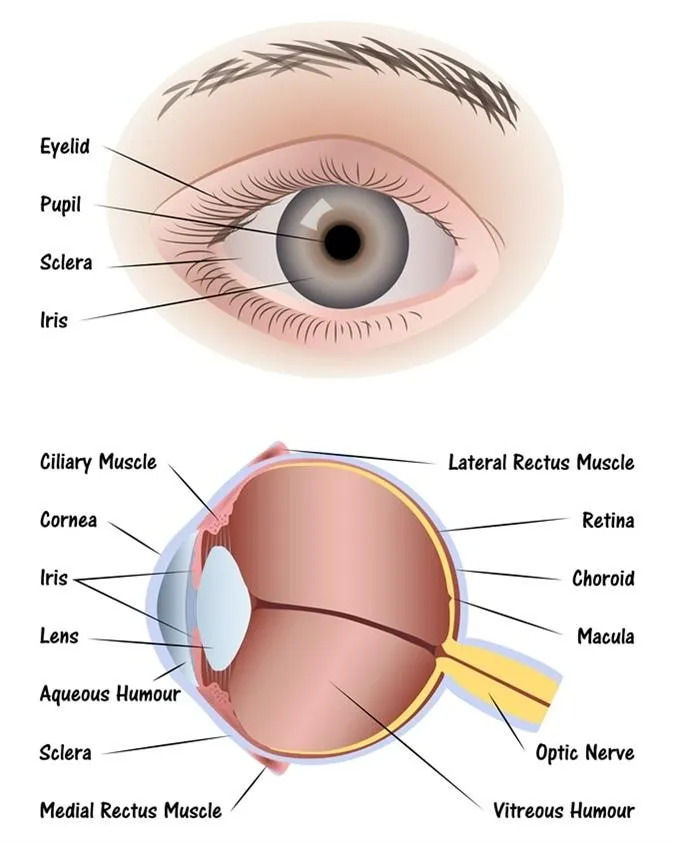
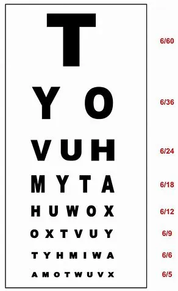

From childhood we have been told that our eye is like a camera which captures the photo of the object in front. Camera it is, but much better than any man made camera available. No camera can capture the picture as sharp and as colourful as our eye in different light conditions. We see and realise this every day when a picture taken in dark does not have the colours and looks black and white through the camera. Similarly the picture looks overexposed and white in bright sun but we can see the beautiful colours of the nature no matter what the light conditions are.
The eye is round and so it is called The Eye Ball. It is made of 3 layers and is filled with absolutely transparent fluid. Since it is like a camera, it has a focussing system and a capturing system but instead of a saving system it has a transmitting system to transmit the captured image to brain which analyses, sees and acts. So in fact: THE EYE CAPTURES AND THE BRAIN SEES
❖ As we know, the human eye works like a camera. Light is focused primarily by the cornea
(appears as the black part)—but it’s the clear front surface of the eye, which acts like a camera lens.
The Iris functions like the diaphragm of a camera, controlling the amount of light reaching the back of the
eye by automatically adjusting the size of the pupil (aperture).
❖ The eye's crystalline lens is located directly behind the pupil and further focuses light. Through a process
called accommodation, this lens helps the eye automatically focus on near and approaching objects, like an
autofocus camera lens.
❖ Light focused by the cornea and crystalline lens (and limited by the iris and pupil) then reaches the retina
— the light-sensitive inner lining of the back of the eye. The retina acts like an electronic image sensor of a
digital camera, converting optical images into electronic signals. The optic nerve then transmits these signals
to the visual cortex — the part of the brain that controls our sense of sight.

The vision is what we see. There are two parts of the vision.
1. The central vision or the visual acuity – the area which we want to see and focus our eye on.
This is commonly measured with a chart (Snellen’s chart) which you are shown and asked to read.
2. The peripheral vision or the field of vision – the area which is around the point and is visible to us
without any voluntary effort. This is measured with a Visual Field Analyser under special circumstances.
The complete panoramic picture thus seen forms the vision.
For both adults and children eye examination is important for overall Heath assessment and maintenance. Eyes should be checked regularly to ensure that you are able to see as best as possible.
❖ At birth
❖ Before entering school (age 3 years)
❖ At 15 years of age
❖ At 40 years of age
❖ And every year after 45 years
❖ It is recommended that infants have their eye health checked at birth
❖ Child should have their eye test between ages 3 and 3 ½ years before they start school.
❖ Every 6 months after that if they are using glasses,
❖ If they don’t use glasses and with no complaints, should get their eyes checked every 5 years
❖ Adults who haven’t had vision problems should get an eye exam at the age of 40,
thereafter have an eye tests every 1-2 years between the age of 40 and 54. After the age of 55,
get tested every year.
❖ If you have diabetes, high blood pressure or family history of eye disease, don’t wait until you are 40 to have an eye exam.
IMPORTANCE OF VISION SCRING:
Child vision is still developing and infections, misaligned eyes (squint) and refractive errors (Need for glasses) can harm the vision or lead to vision loss.
❖ Recommends “NO DIGITAL MEDIA” in children younger than 3 years
❖ Effects of screen use on child’s eye: Myopia (Near sightedness), sleep disruption, eye strain,
burning sensation, fatigue and headache.
Best way to deal with the possible effects of screen are:
✔ Follow 20-20-20 rule: every 20 minutes, look at least 20 feet away for 20 seconds.
✔ Avoid using screens outside or in brightly lit areas, where the glare on the screen can create strain.
✔ Adjust brightness and contrast of the screen.
✔ Good posture.
✔ Hold digital media further away: 18-24 inches is ideal.
✔ Blink often
Computer vision Syndrome is a condition where there is redness, discomfort, watering, burning or irritation in the eyes on using Computer.
It is due to dryness associated with computer work due to reduced blinking and airconditioning
@coppyrights:||All Rights Received